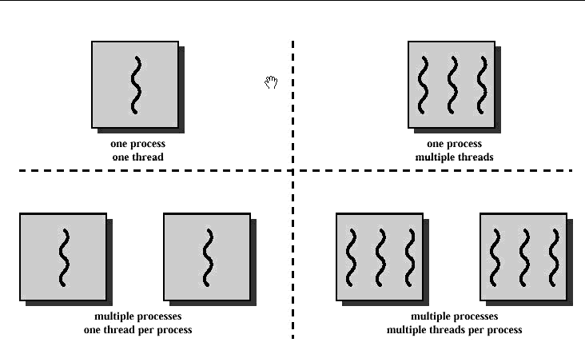
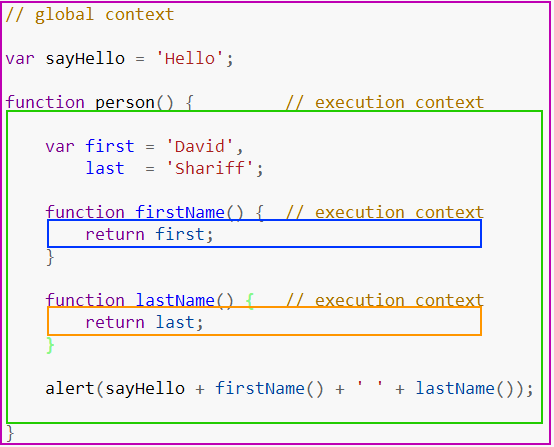
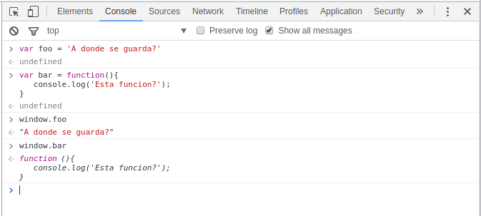
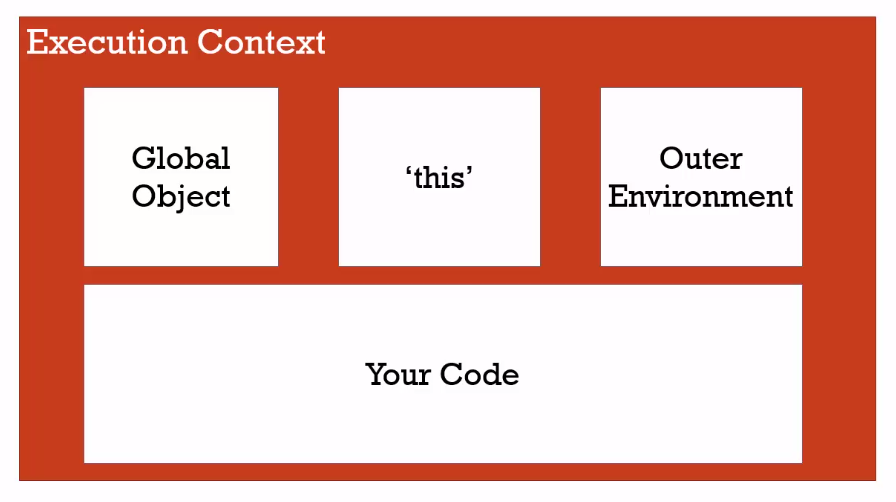
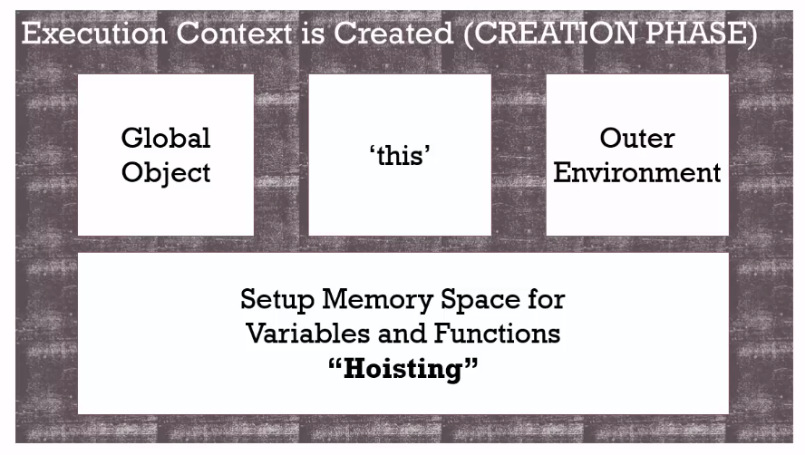
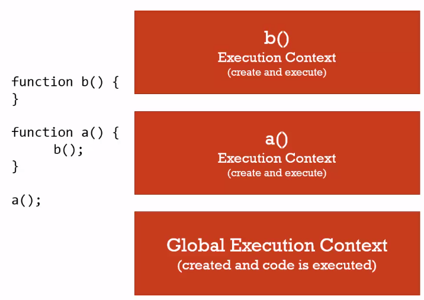
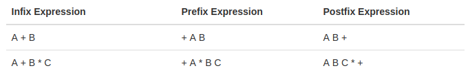
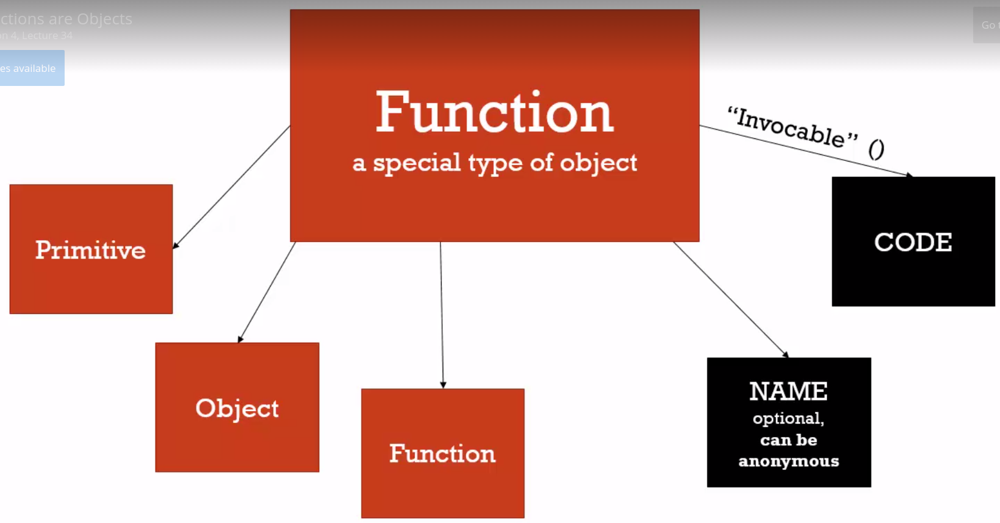

JavaScript
Avanzado I
Empecemos con algunos fundamentos:
Single Threaded y Sincrónico
En ciencias de la computación un thread (o hilo de ejecución) es la secuencia de instrucciones más pequeña que puede ser manejada por un planificar de recursos (él que se encarga de repartir el tiempo disponible de los recursos del sistema entre todos los procesos) del Sistema Operativo.

JavaScript es Single Threaded y sincrónico, es decir que sólo puede hacer un sólo comando o instruccion en cada momento y que lo hace en orden, empieza la instrucción siguiente cuando termina la anterior. Esto puede sonar confuso, porque vemos que, en el browser por ejemplo suceden muchas cosas al mismo tiempo o bien, cuando tiramos una función asincrónica y esta se realiza mientras nosotros hacemos otras cosas, etc… esto sucede porque en general usamos javascript en conjunto con otros procesos, que pueden ser o no single threaded y en conjunto nos da la sensación que está ocurriendo todo al mismo tiempo, aunque es muy probable que no sea así.
Los procesadores son tan rápidos que nos dan la sensación de paralelismo en tareas cuando en realidad se hacen en serie.
Syntax Parser
Un programa que lee tu código y determina qué hace y si su sintaxis es válida. Si todo está bien se generá código legible por la computadora que luego es ejecutado como instrucciones. Lo importante de esto, es que el intérprete además puede agregar ciertos comportamientos extras, vamos a ver algunas de esas cosas extras que el intérprete maneja por nosotros.
Lexical Environment
El lexical environment tiene que ver con dónde están declarados ciertos statements o expresiones en tu código. Es decir, el comportamiento de JavaScript puede cambiar según dónde hayas escrito el código.
function hola() {
var foo = 'Hola!';
}
var bar = 'Chao';Por ejemplo, para el intérprete las dos declaraciones de variable del arriba tendrán significados muy distintos. Si bien la operación es igual en los dos (asignación) al estar en lugares distintos (una dentro de una función y la otra no) el intérprete las parseará de forma distinta.
En otros lenguajes puede que el lexical environment no cambie el comportamiento de la ejecución del código.
Execution Context
El contexto de ejecución contiene información sobre qué código se está ejecutando en cada momento. Además de mantener el código que tiene que ejecutar, también mantiene más información sobre desde dónde se invocó ese código, en qué lexical enviroment está, etc…
Global Enviroment
Cada vez que ejecutamos algo en JavaScript se corre dentro de un contexto de ejecución. Como todo el código corre en un contexto, si no especificamos ese contexto (veremos cómo se hace despues) entonces el código se va a ejecutar en el contexto global, que es el contexto de base que nos crea automáticamente el interprete.
Básicamente, vamos a decir que es global cualquier bloque de código que no esté declarado dentro de una función.
Además de ejecutar el código que le pasemos, también crea un objeto global y además crea una variable llamada this. Por ejemplo, si usamos el engine de javaScript de Chrome ( este es el intérprete ), y vamos a la consola vamos a ver que el objeto global que mencionamos el es objeto window y que la variable this hace referencia a ese objeto. Esos objetos los generó el interprete cuando creó el ambiente de ejecución. Si abro otra pestaña voy a tener otro objeto window similar, ya que es otro contexto de ejecución.

Si corremos JavaScript en otro ambiente que no sea el browser, por ejemplo con NodeJs o con otros engines, es muy probable que el objeto global no sea
windowy sea otro. Pero siempre hay UN objeto global.
En JavaScript, cuando declaramos variables y funciones en el contexto global, estos se guardan en el objeto global. Si declaramos variables y funciones en la consola de desarrollador, vamos a ver que estás aparecerán dentro de window que es el objeto global.

Por último, el contexto de ejecución tambien mantiene una referencia a otros contextos de ejecución (desde donde fue creado). Como ahora hablamos del contexto global, esta referencia contiene el valor null, ya que no hay otro contexto que haya invocado a este.

Creando el contexto de ejecución / Hoisting
Veamos como el intérprete crea el contexto de ejecución global. Cuando el interprete lee un bloque de código realiza un proceso llamado hoisting. Básicamente lee todo el código buscando declaraciones de variables y funciones, y reserva un espacio en memoria para ellas.
Probá ejecutar lo siguiente en JavaScript:
bar();
console.log(foo);
var foo = 'Hola, me declaro';
function bar() {
console.log('Soy una función');
}En otros lenguajes, si intentaramos invocar una función o una variable que está definida ‘más abajo’ seguramente tendríamos un error. Pero JavaScript, al realizar el proceso de hoisting, ya tiene reservado el espacio para esas variable y funciones, por lo tanto no se genera un error. Notesé que a la función la pudo ejecutar, esto quiere decir que durante el hoisting guardó su contenido también, no sólo reservó el espacio. Pero con el caso de la variable, sólo reservo el espacio, ya que cuando hacemos el console.log vemos que contiene undefined.
Podemos pensar el Hoisting como que el interprete ‘mueve’ las declaraciones a la parte de már arriba de nuestro código. Sólo lo hace con las declaraciones y no con las inicializaciones.
Para entender por qué el interprete hace esto, tenemos que saber cómo se crea el contexto de ejecución. Esto se hace en dos fases. La primera es la fase de creación (creation phase). En esta fase el interprete genera el objeto global, asigna la variable this y las referencias a otro contexto de ejecución (Outer Context), y además reserva el espacio para todas las variables y funciones que vaya a utilizar ese contexto, justamente en este último paso es donde se genera el proceso de hoisting.

El hosting es el primer ejemplo de las cosas extras que hace el interprete sin que nosotros se lo pidamos. Si no las conocemos, nos puede pasar que veamos comportamientos extraños y no sepamos de donde vienen (como que podamos usar funciones que no hemos declarado antes de invocarlas!!)
La segunda fase es la fase de ejecucción, en esta fase, ya tenemos todo lo que se creo en la primera fase, y ahora sí el intérprete ejecuta nuestro código, línea por línea!.
Este proceso de crear contextos de ejecución sucede siempre al principio cuando se crea el contexto global, ahora vamos a ver que también sucede cada vez que invocamos una función en nuestro código, como se pueden imaginar, en un script cualquiera, es muy probable que se creen varios contextos de ejecución (muchas invocaciones a funciones), estos contextos se van a ir apilando en la pila de ejecución o execution stack.
Execution stack
Para ilustar cómo se van creando y cómo se apilan los contextos veamos el siguiente código:
function b() {
console.log('B!')
};
function a() {
// invoca a la función b
b();
};
//invocamos a
a();Veamos que ocurre cuando corremos este script: Como sabemos, lo primero que pasa es la creción del contexto global y el proceso de hoisting, entonces la función a y b van a estar en memoria. Una vez que termina eso, empieza la fase de ejecución, en esa fase es que el interprete va a recorrer línea por línea el script. En nuestro ejemplo hay una única línea para ejecutar (las otras las leyó durante el hoisting) que es la línea donde invocamos a a().
Lo que sucede ahora, es que se crea un nuevo contexto de ejecución que se va a poner arriba del contexto de ejecución global (creando la pila). Básicamente, el contexto que esté arriba de la pila, es el que se está ejecutando en ese momento ( o cuando le den tiempo de procesador a JavaScript). Cuando se creó ese contexto nuevo, pasó lo mismo que cuando creamos el global, el intérprete generó la variable this y pusó las referencias al outer context (en este caso el outer context es el contexto global), después de hacer todo eso, el intérprete va a ejecutar línea por línea el código del nuevo contexto, es decir, el código de la función a. Ahora, dentro de a hay una sóla línea de código, y en esa línea se invoca a b. Si! como se imaginan, el intérprete va a crear un_nuevo contexto de ejecución para la función b (haciendo de nuevo los pasos previamente mencionados), y poniendolo en la cima de la pila.

Cada invocación a una función crea un contexto de ejecución nuevo, que pasa por las dos fases de creación antes mencionadas. Cuando se termina de ejecutar, se destruye y se saca de la pila de ejecución para seguir con los que quedan.
Scope
Ahora que sabemos que existen los contextos de ejecución, podemos entender más fácilmente que ocurre con las variables que creamos dentro de las funciones que invocamos. Cada contexto maneja sus propias variables, y son independientes de los demás. Justamente por eso, podemos usar los mismos nombres de variables dentro de funciones que creamos sin que pisen las demás.
También sabemos que podemos acceder a una variable declarada en el contexto global dentro de una función. Esto se debe a que JavaScript primero busca una variable dentro del contexto que se está ejecutando, si no la encuentra ahí, usa la referencia al outer context para buscarla dentro de ese contexto. Gracias a esto vamos a poder acceder a variables que estén afuera de nuestro contexto (siempre y cuando no hayamos declarado una nueva con el mismo nombre!!).
Veamos en el código siguiente el comportamiento de las variables:
var global = 'Hola!';
function a() {
// como no hay una variable llamada global en este contexto,
// busca en el outer que es el global
console.log(global);
global = 'Hello!'; // cambia la variable del contexto global
}
function b(){
// declaramos una variable global en nuestro contexto
// esta es independiente
var global = 'Chao';
console.log(global);
}
a(); // 'Hola!'
b(); // 'Chao'
console.log(global); // 'Hello'Para esto vamos a introducir el término scope, este es el set de variable, objeto y funciones al que tenemos acceso en determinado contexto. En el ejemplo anterior, la variable global está definida en dos scopes distintos, uno es el scope global y el otro es el scope de la función b, esto quiere decir que, a pesar de tener el mismo nombre, estas dos variables son distintas.
Justamente, cuando JavaScript no encuentra una variable en su scope, lo que hace es buscar en otros scopes (de contextos que esten en la referencia de outer contexts). A esta búsqueda en distintos scope se la conoce como the scope chain, ya que el intérprete busca en cadena scope por scope por el nombre de la variable, hasta llegar al scope global. Noten que el outer enviroment no es necesariamente el contexto que esté debajo en la pila de ejecucción, ni tampoco el contexto en donde se invocó la función, si no es el contexto en donde se definió la función! (Se acuerdan que dijimos que en javascript el lexical enviroment era importante?).
Si el intérprete llega el scope Global sin encontrar la variable, entonces va a tirar un error.
Prueben el siguiente código y miren comó cambió todo cuando declaramos la funcion a dentro de la función b:
var global = 'Hola!';
function b(){
var global = 'Chao';
console.log(global); // Chao
function a() {
// como no hay una variable llamada global en este contexto,
// busca en el outer que es scope de b;
console.log(global); //Chao
global = 'Hello!'; // cambia la variable del contexto de b()
}
a();
}
//a(); Ya no puedo llamar a a desde el scope global, acá no existe.
b();
console.log(global); // 'Hola!'Asynchronous non blocking
Ahora que sabemos un poco más sobre cómo hace JavaScript para ejecutar el código, veamos que pasa cuando usamos una función asincrónica a la que le pasamos un callback.
Callback: Le llamamos así a una función que le pasamos como argumento a otra función, para que sea invocada en esta ultima, en general cuando se cumpla una condición o termine de realizar algo (leer un archivo, escribir en una base de datos, traer datos de internet, etc…) .
Cuando decimos código Asincrónico quiere que su ejecución o su completitud está diferida en el tiempo. Por ejemplo, cuando declaramos un evento, el código o la función callback se va a ejecutar cuando suceda ese evento y no cuando el intérprete lee esas líneas, o cuando hacemos un request tipo AJAX y esperamos que llegue la respuesta, etc… En todos estos casos, el engine JavaScript sigue haciendo o ejecutando otras líneas de código, y esto nos puede dar la sensación que estamos haciendo más de una cosa a la vez. Pero al principio dijimos que javascript es sincrónico y que ejecuta una sóla cosa a la vez, veamos cómo logra darnos esa sensación.
Para entender esto, tenemos que ver un poco la imagen grande. Cuando hablamos del engine Javascript tenemos que comprender que nunca actuá sólo, siempre va a estar acompañado por otros componentes de software. El Engine de JavaScript tiene formas de comunicarse con estos otros componentes. Por ejemplo, el componente encargado de renderizar las páginas, o el componente encargado de hacer http requests (en general estos están programados en C o C++). Lo que sucede entonces, es que JavaScript le pide cosas a los demás componentes y les pide que le avise cuando terminen de hacer esas cosas. Por lo tanto, los demás componentes del browser se encargán de hacer ese trabajo y cuando sucede un evento o terminan una tarea le avisan al engine, este interrumpe su proceso normal y mete el callback en el execution stack para realizarla.
Para lograr este comportamiento, el engine JavaScript tiene lo que se conoce como Event Queue, que es una cola que inicialmente está vacía y es en donde el browser (o quien se encarge de realizar las tareas) va a ir poniendo los avisos notificando que se terminó de ejecutar tal tarea. Ahora el engine JavaScript intercala cosas que tienen que ejecutar de su execution stack con cosas que tiene que hacer del event queue, de esta forma nos da la sensación que hay cosas que se hacen en paralelo. Cuando en realidad estamos delegando las tareas a otros componentes.
Para entender exactamente como trabaja el Event queue en conjunto con los demás componentes miren este video, en donde está perfectamente explicado.
Operadores y Tipos de Datos en JavaScript
Antes de avanzar repasemos algunos conceptos de programación.
Tipos de Datos
Static Typing vs Dynamic Typing
Todos los lenguajes de programación tienen características distintas que los caracterizan. Una de ellas es la forma con la que trabajan con variables y tipos de datos. JavaScript en particular tiene lo que se conoce como tipado dinámico o dynamic typing. Esto quiere decir que no tenemos que decirle al intérprete que tipo de datos contiene una variable, él lo calcula por si mismo. En otros lenguajes, al declarar una variable tenemos que avisarle qué tipos de datos vamos a guardar en ella (static typing o tipado estático). Otra cosa importante, es que JavaScript nos permite cambiar el tipo de datos que guardamos en una variable, por ejemplo, podemos tener una variable con un número y luego guardar una string en la misma variable, en otros lenguajes hacer esto nos resultaría en un error.
Cuando queremos convertir algo de un tipo de datos a otro, usamos el termino castear.
Tipos de datos Primitivos en JavaScript
Un tipo de datos Primitivo, son tipos de datos básicos que vienen previamente definidos con el lenguaje. Usando estos tipos de datos primitivos vamos a poder crear tipos de datos más complejos.
En Javascript hay seis tipos de datos primitivos:
- undefined: Este representa que algo no está definido, como por ejemplo cuando declaramos una variable y no le asignamos nada, toma el valor
undefinedpor defecto. - null: Este tambien representa que algo no existe. Lo vamos a usar para decir que una variable está vacía o no tiene nada adentro. (No es lo mismo decir que una variable no está definida, a que NO tiene nada adentro. En el segundo caso sabemos que no tiene nada.)
- Boolean: true o false.
- Number: Este tipo de datos representa un número real. En JavaScript todos los números son representados como tipo flotantes.
- String : Una secuencia de caractéres.
- Symbol: Este tipo de datos es nuevo, está en el nuevo standart ES6. Por ahora lo ignoraremos.
Operadores
Un operador no es otra cosa que una función, pero al ser funciones básicas para el Engine y que se utilizan muchos, se escriben de una forma particular y que en general es corta y simple. Generalmente, los operadores toman dos parámetros y retornan un resultado.
Por ejemplo: Para el intérprete al ver el signo +, sabe que tiene que ejecutar la función suma (que tiene internamente definida), y toma como parámetros los términos que estén a la izquierda y la derecha del operador. De hecho, es equivalente a tener una función que se llame suma y que reciba dos parámetros:
var a = 2 + 3; // 5
function suma(a,b){
return a + b;
// usamos el mismo operador como ejemplo
// Si no deberiamos hacer sumas binarias!
}
var a = suma(2,3) // 5De hecho, esa forma de escribir tiene un nombre particular, se llama notación notación infix o infija, en ella se escribe el operador entre los operandos. Pero también existen otro tipos de notación como la postfix o postfija y la prefix o prefija. En estas última el operador va a la derecha de los operandos o a la izquierda respectivamente.

En fin, lo importante a tener en cuenta es que los operadores son funciones.
Precedencia de Operadores y Asociatividad
Esto parece aburrido, pero nos va a ayudar a saber cómo piensa el intérprete y bajo que reglas actua.
La precedencia de operadores es básicamente el orden en que se van a llamar las funciones de los operadores. Estás funciones son llamadas en orden de precedencia (las que tienen mayor precedencia se ejecutan primero). O sea que si tenemos más de un operador, el intérprete va a llamar al operador de mayor precendencia primero y después va a seguir con los demás.
La Asociatividad de operadores es el orden en el que se ejecutan los operadores cuando tienen la misma precedencia, es decir, de izquierda a derecha o de derecha a izquierda.
Podemos ver la documentación completa sobre Precedencia y Asociatividad de los operadores de JavaScript acá
Por ejemplo: console.log( 3 + 4 * 5) Para resolver esa expresión y saber qué resultado nos va a mostrar el intérprete deberíamos conocer en qué orden ejecuta las operaciones. Al ver la tabla del link de arriba, vemos que la multiplicación tiene una precedencia de 14, y la suma de 13. Por lo tanto el intérprete primero va a ejecutar la multiplicación y luego la suma con el resultado de lo anterior -> console.log( 3 + 20 ) -> console.log(23).
Cuando invocamos una función en Javascript, los argumentos son evaluados primeros (se conoce como non-lazy evaluation), está definido en la especificación.
No confundir el orden de ejecución con asociatividad y precedencia, ver esta pregunta de StackOverflow.
Ahora si tuvieramos la misma precedencia entraría en juego la asociatividad, veamos un ejemplo:
var a = 1, b = 2, c = 3;
a = b = c;
console.log(a, b, c);Qué veriamos en el console.log? Para eso tenemos que revisar la tabla por la asociatividad del operador de asignación =. Este tiene una precedencia de 3 y una asociatividad de right-to-left, es decir que las operaciones se realizan primero de derecha a izquierda. En este caso, primero se realiza b = c y luego a = b (en realidad al resultado de b = c, que retorna el valor que se está asignando). Por lo tanto al final de todo, todas las variable van a tener el valor 3. Si la asociatividad hubiese al revés, todos las variables tendrían el valor 1.
Coerción de Datos
Ahora, como JavaScript tiene dynamic typing, a veces el intérprete sólo cambia el tipo de datos de un valor a otro. Esto es conocido como Coercion. Por ejemplo, si hacemos var a = 1 + 'hola', el resultado va a ser 1hola. Lo que ocurrió es que el número 1 fue convertido a un string, y luego se realizó la operación de concatenado entre el 1 y el string hola. Lo importante es que nosotros nunca le pedimos a javascript que nos haga la conversión, el decidió hacerlo sólo (en otros lenguajes nos devolvería un error si quisieramos hacer lo mismo!).
Cuando usamos el operador
===le estamos diciendo al intérprete que NO convierta los operadores antes de hacer la comparación.
A veces es obvio lo que JavaScript va a hacer cuando convierte una valor a otro, como por ejemplo, cuando convierte un número a un string. Pero a veces no es intuitivo. Con la función Number() podemos convertir valores a números, veamos algunos ejemplos:
Number('3') // devuelve el número 3. Obvio!
Number(false) // devuelve el número 0. mini Obvio.
Number(true) // devuelve el número 1. menos mini Obvio.
Number(undefined) // devuelve `NaN`. No era obvio, pero tiene sentido.
Number(null) // devuelve el nuḿero 0. WTFFFF!!! porqueeEE no debería ser `NaN`??Tampoco es obvio cuando dejamos que el intérprete haga conversiones cuando comparamos por igualdad, de hecho hay una tabla donde podemos ver qué cosas son iguales y cuáles no cuando usamos coercion.
Podríamos decir que el valor
NaNes un tipo primitivo de JavaScript. Este aparece cuando Js intenta convertir algo a un número, pero no puede hacerlo. Literalmente significaNot a Number.
Ahora sabiendo todo esto, qué cosa sucede en esta expresión console.log(3 < 2 < 1). Por qué el resultado es true? Viendo las asociatividades y la coerción que está sucediendo deberíamos poder explicarlo.
Prueben ver a qué convierten las cosas, para booleanos podemos usar Boolean(), para strings String().
Funciones y Objetos
First Class Functions
Algo muy importante de JavaScript es que las funciones son de tipo first class, esto quiere decir que las funciones pueden ser tratadas igual que cualquier otro tipo de valor. Es decir, que podemos pasar una funcion como argumento, podemos asignar una función a una variable, podemos guardarla en un arreglo, etc…
Esta es una de las features de JavaScript que lo hace muy poderoso, hay otros lenguajes que pueden hacer lo mismo, pero el más popular es JavaScript.
De hecho, las funciones en JavaScript son un tipo especial de objetos. Este objeto, además de poder tener cualquier propiedades adentro (como cualquier objeto) tiene dos propiedades especiales: La primera es el nombre (name), que contiene el nombre de la función, esta propiedad es opcional ( funciones anónimas ). La segunda propiedad se llama code (código) y en ella se guarda el código que escribiste para la función.

En el código de abajo, declaramos una función y luego le agregamos una propiedad llamada saludo a ella. Como la función es un objeto, entonces podemos hacer esto sin problemas.
function hola(){
console.log('hola');
}
hola.saludo = 'Buen Día';
console.log(hola);También vemos que al hacer el console.log de la función, el intérprete nos devuelve el código que tiene adentro la función en una string. Esto es justamente la propiedad code que tienen todas las funciones.
Expresión
Una Expresión es una unidad de código que evaluá a un valor. Por ejemplo, a = 3, es una expresión que devuelve el número 3. 1 + 2 también es una expresión que retorna 3. Las expresiones pueden ser escritas en cualquier lugar donde se espera un valor, por ejemplo: console.log( 1 + 2);.
Statement
Los Statements, no producen un valor directamente, si no que hacen algo, generalmente tienen adentro expresiones. Según el statement que usemos vamos a tener un comportamiento distinto, ejemplos de statements son if, while, for, etc…
En javascript, en términos de funciones podemos tener ambos functions statements y functions expressions, veamos la diferencia de ambos.
function saludo(){
console.log('hola');
}El de arriba es un function statement, cuando esto es ejecutado por el intérprete no retorna nada, pero sí hace algo: reserva un espacio en memoria para la función que definimos.
var saludo = function(){
console.log('Hola!');
}
console.log(function(){
//hola;
})En este segundo caso, estamos usando una function expression, en la cual estamos creando un objeto de tipo función (anónima) y además la estamos guardando en una variable llamada saludo. Justamente, la variable saludo va a apuntar a una dirección de memoria que contiene el objeto de tipo función que creamos anónimamente en una expresión (esa expresión retornó el objeto que se guardó en la variable.). Cuando declaramos una función anónima y la pasamos como argumento, también estamos haciendo una function expression.
Pasando variables por referencia o por valor
Hay dos formas de pasar variables en cualquier lenguaje de programación, en algunos podemos elegir la forma nosotros pero en JavaScript el intérprete elige la forma él mismo.
Las dos formas son, por valor o por referencia. Veamos la siguiente animación:

Cuando pasamos algo por referencia, estamos pasando una referencia o un puntero al objeto. Por lo tanto, cualquier cambio que hagamos a esa referencia, se va a ver reflejado en el objeto original. En el ejemplo, pasamos una referencia a la taza y en nuestra función la llenamos de café. Al ser una referencia al objeto cup, vemos que se ve reflejado el cambio en ella (se llena de café) ya que son el mismo objeto!.
En cambio, cuando pasamos algo por valor, estamos pasando el elemento por sí mismo, o una copia de él. En el ejemplo de la tasa, pasamos la tasa por valor, es decir que pasamos una tasa nueva, que existe por si misma (no es una referencia, si no la tasa misma). Por eso, cuando llenamos esa tasa de café, la otra se mantiene igual, ya que son dos objetos distintos.
En lenguajes como C++ el programador puede decidir si enviar el objeto en sí (por valor) o enviar una referencia al objeto (por referencia). En JavaScript, según qué cosa estemos pasando, el intérprete decide si es por valor o referencia. Básicamente, si pasamos un valor primitivo (números, strings, etc… ) estos se pasan por valor, pero si pasamos un objeto (cualquier objeto, incluso funciones) este se pasa por referencia. Podemos probar este comportamiento:
var a = 1, b = 2;
a = b;
b = 1;
console.log(a);
// Como se pasó el valor de `b` y no la referencia,
// cuando cambiamos b no impacta en el valor de a. var a;
var b = { nombre : 'hola'};
a = b ;
b.nombre = 'Chao';
console.log(a.nombre); // 'Chao'
// Cuando se hizo la asignación se pasó la referencia de b, por lo tanto
// cuando cambiamos la propiedad nombre de b, se ve reflejado en a
// porque ambas variables "apuntan" al mismo objeto en memoriaVariable this
Habiamos dicho que cuando se crea el execution context, el interprete reserva el espacio de memoria para las variables (hoisting), guarda la referencia al outer enviroment y además setea la variable this. Esta variable va a apuntar a distintos objetos dependiendo en cómo fue invocada la función. Esto puede causar algunas confusiones. Veamos algunos escenarios:
Contexto global inicial
Este es el caso cuando ejecutamos código en el contexto global (afuera de cualquier función). En este caso this hace referencia al objeto global, en el caso del browser hace referencia a window.
// En el browser esto es verdad:
console.log(this === window); // true
this.a = 37;
console.log(window.a); // 37En el contexto de una función
Cuando estamos dentro de una función, el valor de this va a depender de cómo sea invocada la función.
Llamadas simples
En este caso, el interprete le da a this una referencia al objeto global.
function f1(){
return this;
}
f1() === window; // global objectSi usamos el modo
strictde Javascript, el ejemplo de arriba va a devolverundefined, ya que no le deja al interprete asumir quethises el objeto global.
Cómo un método de un objeto
Cuando usamos el keyword this dentro de una función que es un método de un objeto, this toma hace referencia al objeto sobre el cúal se llamó el método:
var o = {
prop: 37,
f: function() {
return this.prop;
}
};
console.log(o.f()); // logs 37
// this hace referencia a `o`En este caso, no depende donde hayamos definido la función, lo único que importa es que la función haya sido invocada como método de un objeto. Por ejemplo, si definimos la función afuera:
var o = {prop: 37};
// declaramos la función
function loguea() {
return this.prop;
}
//agregamos la función como método del objeto `o`
o.f = loguea;
console.log(o.f()); // logs 37
// el resultado es le mismo!De todos modos, hay que tener cuidado con el keyword this, ya que pueden aparecer casos donde es contraintuitivo ( Como varias cosas de JavaScript ). Veamos el siguiente ejemplo:
var obj = {
nombre: 'Objeto',
log : function(){
this.nombre = 'Cambiado'; // this se refiere a este objeto, a `obj`
console.log(this) // obj
var cambia = function( str ){
this.nombre = str; // Uno esperaria que this sea `obj`
}
cambia('Hoola!!');
console.log(this);
}
}Si ejecutamos el código de arriba, vamos a notar que después de ejecutar el código, la propiedad nombre de obj contiene el valor Cambiado y no 'Hoola!!'. Esto se debe a que el keyword this dentro de la función cambia NO hace referencia a obj, si no que hace referencia al objeto global. De hecho, si buscamos dentro del objeto global la variable nombre, vamos a encontrar con el valor 'Hoola!!' que seteamos con la función cambia. Esto quiere decir que no importa en donde estuvo declarada la función, si no cómo la invocamos.
Este comportamiento es considerado como un bug por mucha gente. Siempre hay que tener en mente, que JavaScript en sí es un programa codeado por personas, y que este mismo puede tener bugs como cualquier otro pedazo de código!.
Prácticamente, no podemos saber a ciencia cierta que valor va a tomar el keyword hasta el momento de ejecución de una función. Porque depende fuertemente de cómo haya sido ejecutada.
Para resolver este tipo de problemas existe un patrón muy común, y se basa en guardar la referencia al objeto que está en this antes de entrar a una función donde no sé a ciencia cierta que valor puede tomar this:
var obj = {
nombre: 'Objeto',
log : function(){
this.nombre = 'Cambiado'; // this se refiere a este objeto, a `obj`
console.log(this) // obj
var that = this; // Guardo la referencia a this
var cambia = function( str ){
that.nombre = str; // Uso la referencia dentro de esta funcion
}
cambia('Hoola!!');
console.log(this);
}
}De esta forma, that (puede tener cualquier nombre) va a apuntar al objeto obj (this apuntaba a ese objeto cuando hicimos la asignación). Ahora si, podemos usar that en vez de this y estar seguros qué es lo que va a tener adentro.
Immediately invoked functions expressions (IIFE)s
Vamos a ver un concepto ampliamente usado por los desarrolladores de JavaScript, y ver cómo nos puede servir. Ya vimos la diferencia entre una function statement y una function expression. Tambien sabemos que las funciones son objetos, y que podemos invocarlas usando el operador (). Por lo tanto podemos hacer los siguiente:
var hola = function(){
return 'hola';
}() // ACA ESTOY INVOCANDO LA FUNCIÓN!.Lo que hicimos fue invocar la función inmediatamente despues de escribir la expresión, de ahi viene el nombre de IIFE.
var hola = function( nombre ){
return 'Hola ' + nombre;
}('Toni')Podemos usar todo lo que sabemos de funciones con las IIFE, en el ejemplo de arriba la función recibe un parámetro, que se lo pasamos cuando la invocamos inmediatamente. Luego de ejecutar eso, la variable hola va a contener la string Hola Toni.
También podemos declarar funciones anónimas en una function expression y ejecutarla sin tener que guardarla en ningún lugar, la ejecutamos como si fuera cualquier expresión, para eso voy a tener que envolver la declaración de la función con () (de hecho lo hacemos para engañar al syntax parser):
(function(nombre){
console.log(nombre);
}('Toni')) // IIFEEste es el clásico ejemplo de una IIFE, este patrón lo vas a ver en casi todos las librerías y frameworks que hay hoy. Ya que nos permite ejecutar código sobre la marcha. Además, cuando llega a esa linea, y ejecuta esa función, el interprete invoca la función y por lo tanto crea un nuevo contexto de ejecución para ese código. Por lo tanto, las variables que declare adentro, van a estar viviendo en ese nuevo contexto y no en el contexto global. Esto último es lo más importante de este patrón, ya que nos crea un nuevo namespace sólo para nosotros y estamos seguros que no vamos a colisionar con variables que fueron declaradas en el contexto global por otras personas (Justamente por esto, los frameworks y librerías utilizan fuertemente este patrón).
A veces es necesario acceder al objeto global dentro de nuestra función. Lo que podemos hacer, es pasar una referencia al objeto global cuando invocamos nuestra función:
(function(global, nombre){
console.log(nombre);
}(window, 'Toni')) // IIFEDe esta forma, tenemos acceso al objeto global y estamos protegidos de cualquier accidente. Nuestro código está a salvo!
Homework
Completa la tarea descrita en el archivo README